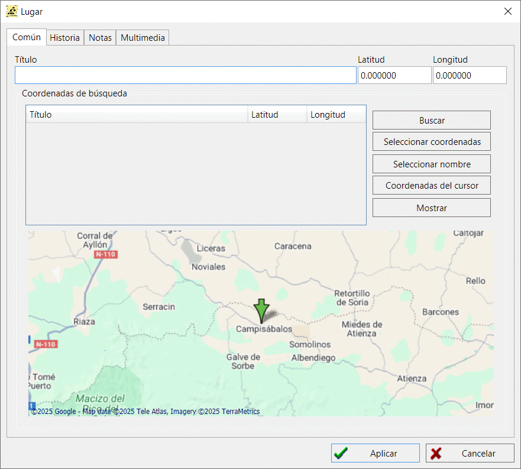

Registro de localización geográfica
Los registros de localización geográfica son elementos del directorio único de localizaciones, donde cada localización tiene sus coordenadas.
Cuando defina una ubicación para un evento/hecho en el registro de una
persona y/o familia, puedes hacerlo sin hacer referencia al directorio de ubicaciones.
Pero si quieres poder ver la ubicación en mapas geográficos en el futuro,
tendrás que añadir un registro de ubicación al directorio de ubicaciones, encontrar un asentamiento en Google Maps
y vincular las coordenadas de la ubicación.
Puedes añadir notas de texto u objetos multimedia (por ejemplo, una foto) a una localización geográfica.
Para asignar coordenadas a un lugar haz lo siguiente:
-
Introduzca el nombre exacto de las localidades o uno de los posibles nombres en el campo
"Nombre" (es aconsejable especificar el nombre moderno, ya que Google Maps no sabe nada
de los nombres históricos de los asentamientos).
-
Haz clic en el botón "Buscar". GEDKeeper se conectará con Google Maps y
buscará la ubicación en las bases de datos de Google.
-
Cuando veas la ubicación que necesitas en la lista "Buscar coordenadas",
puedes hacer clic en el botón "Usar coordenadas" para asignar la latitud y longitud
de la ubicación encontrada a la de destino. También puedes hacer clic en "Usar nombre"
para asignar el nombre de la ubicación en Google Maps o definirlo tu mismo.
-
Si en la lista "Buscar coordenadas" no aparece ninguna localidad que coincida,
deberás cambiar el nombre de la localidad y volver a buscar.
Repite esta operación hasta que encuentres la ubicación deseada.
-
Si sigues sin encontrar un resultado que coincida, deberás asignar tu mismo la latitud y longitud
de la ubicación necesaria,—o encontrar la ubicación más cercana a la requerida,
siguiendo los pasos anteriores, y utilizar esa ubicación.
El botón "Mostrar" abre Google Maps en la ubicación especificada.

En la pestaña "Localizaciones" de la ventana principal de trabajo hay una tabla unificadora que incluye
todas las localizaciones disponibles en la base de datos. A la derecha de la tabla,
un resumen de localidades muestra todos los eventos, relacionados con personas y familias,
que se refieren a la localidad seleccionada.
Ver también: Evento/hecho, Nota, Multimedia, Mapa.